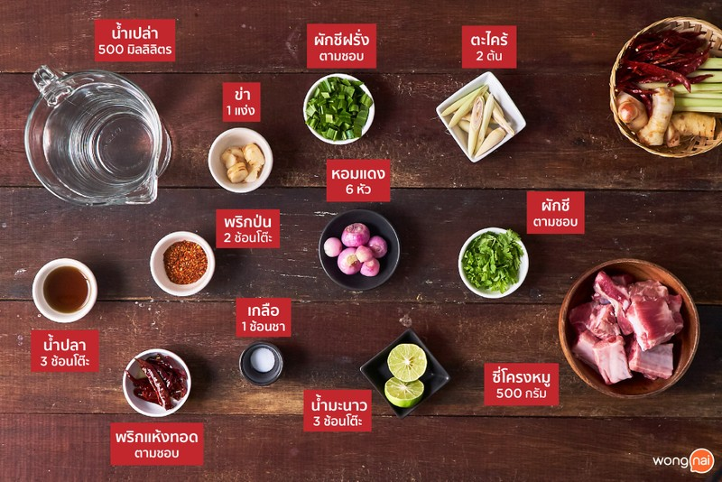
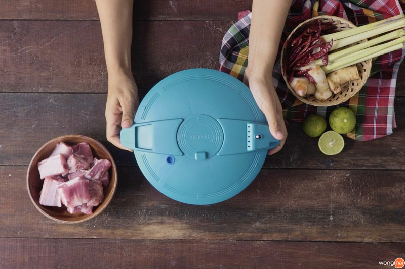
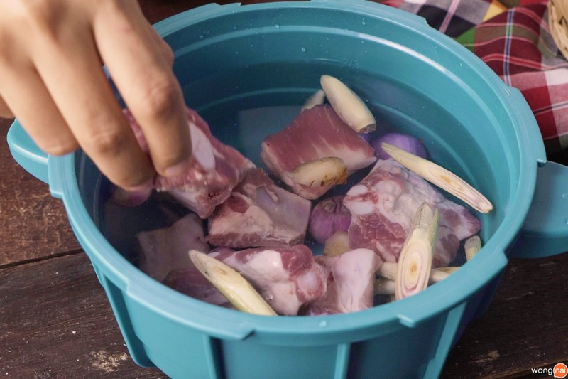
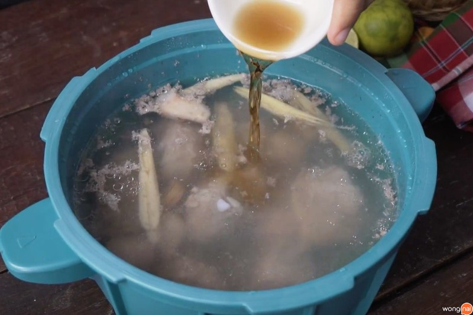
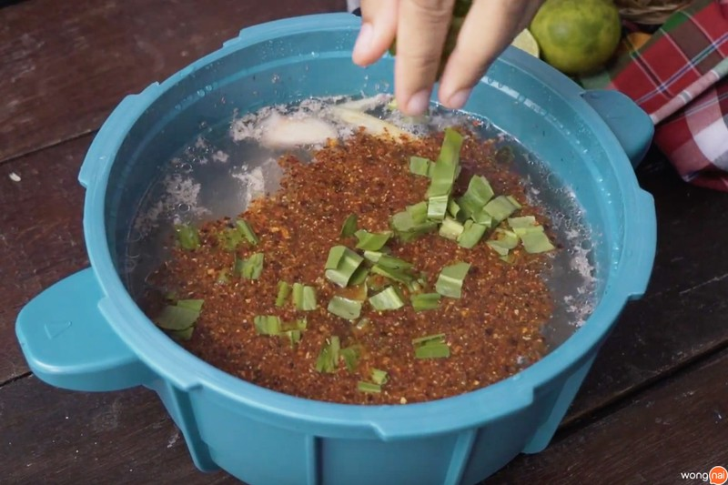
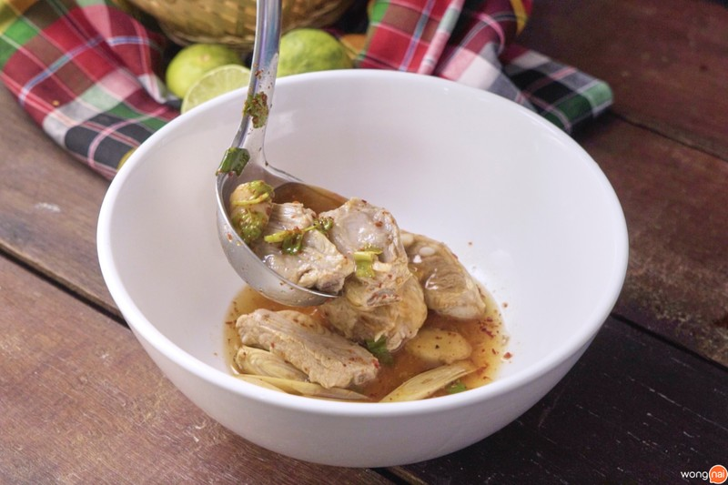

ต้มแซ่บซี่โครงหมู
500 Kcal/เสิร์ฟ
คุณจะอยู่บ้าน หรืออยู่หอก็ทำได้ “ต้มแซ่บซี่โครงหมู” ฉบับจับใส่ไมโครเวฟก็นุ่มได้ อยากรู้ว่าเคล็ดลับคืออะไร ตามมาดูวิธีทำกันเลย เข้าครัวมาทำเมนูอาหารอีสาน “ต้มแซ่บซี่โครงหมู” สิบห้านาทีก็นุ่มได้ ไม่ต้องตุ๋นเป็นชั่วโมง ไม่ว่าจะอยู่หอ หรืออยู่บ้านก็สะดวกทั้งนั้น จะมีเคล็ดลับ หรือวิธีการพิเศษอย่างไร รีบสวมผ้ากันเปื้อนแล้วตามเข้าครัวมาเลยจ้า :)
วิธีทำ “ต้มแซ่บซี่โครงหมู” เมนูอาหารอีสานรสแซ่บ ใส่ไมโครเวฟก็นุ่มได้
วัตถุดิบ
1. ซี่โครงหมู 500 กรัม2. น้ำเปล่า 500 มิลลิลิตร
3. ตะไคร้ 2 ต้น
4. หอมแดง 6 หัว
5. ข่า 1 แง่ง
6. พริกป่น 2 ช้อนโต๊ะ
7. เกลือ 1 ช้อนชา
8. น้ำมะนาว 3 ช้อนโต๊ะ
9. น้ำปลา 3 ช้อนโต๊ะ
10. ผักชี ตามชอบ
11. ผักชีฝรั่ง ตามชอบ
12. พริกแห้งทอด ตามชอบ
วิธีทำ
STEP 1 : ต้ม
- ใส่ซี่โครงหมูลงไปในหม้อความดันละเทน้ำเปล่าลงไปให้ถึงขีด ⅔ ของหม้อ- ใส่เกลือ หอมแดง ตะไคร้ และข่าลงไป ปิดฝาหม้อ และนำเข้าไมโครเวฟด้วยความร้อน 800 วัตต์ 15 นาที
 
หม้ออัดแรงดัน ใส่ซี่โครงหมูลงไป
STEP 2 : ปรุงรส
-นำออกจากไมโครเวฟ และเปิดฝา- ใส่พริกป่น น้ำปลา น้ำมะนาว ผักชี และผักชีฝรั่ง คนให้เข้ากัน
 
ปรุงรสด้วยน้ำปลา โรยผักชีฝรั่ง
STEP 3 : จัดเสิร์ฟ
- ตักต้มแซ่บซี่โครงหมูใส่ชาม และโรยพริกแห้งทอด พร้อมเสิร์ฟจ้า